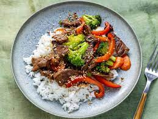

Stir-fry

Description
The most time-consuming part of making stir-fry is all the chopping. Slicing your meat and veggies
into smaller bite-sized pieces can take a little bit of time and effort, but it's worth it for the end result.
Flank steaks are the most popular choice for making a stir-fry.
However, you can also use sirloin steak, skirt steak, Denver steak, or even beef chuck.
Ingredients
- 2 tablespoons vegetable oil
- 1 pound beef sirloin, cut into 2-inch strips
- 1 ½ cups fresh broccoli florets
- 1 red bell pepper, cut into matchsticks
- 2 carrots, thinly sliced
- 1 green onion, chopped
- 1 teaspoon minced garlic
- 2 tablespoons soy sauce
- 2 tablespoons sesame seeds, toasted
Steps
- Gather all ingredients
- Heat vegetable oil in a large wok or skillet over medium-high heat; cook and stir beef until browned, 3 to 4 minutes
- Move beef to the side of the wok and add broccoli, bell pepper, carrots,
green onion, and garlic to the center of the wok. Cook and stir vegetables for 2 minutes.
- Stir beef into vegetables and season with soy sauce and sesame seeds. Continue to cook and
stir until vegetables are tender, about 2 more minutes
- Serve hot and enjoy!